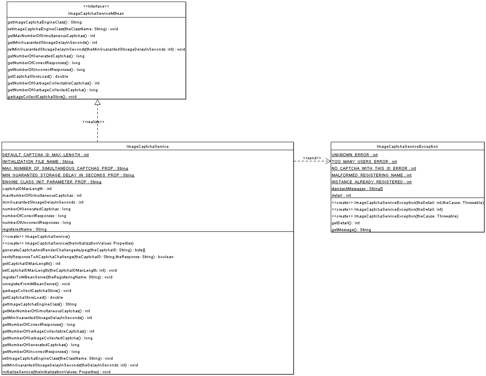

This package provides an image captcha service for web
applications, implemented as a JMX manageable POJO object.
It is the main package for the jcaptcha-j2ee module.
Subpackages wrap the image captcha service provided by this
package in specific technologies components :
- A j2ee Filter for easy captcha integration to existing web
applications (package {@link com.octo.captcha.j2ee.servlet})
- An Axis web service endpoint for providing captcha service
to non java web applications (package
{@link com.octo.captcha.j2ee.rpc})
- A JBoss service for @TODO : DOCUMENT ME ! (package
{@link com.octo.captcha.j2ee.jboss})
Package specification

Examples
WORK IN PROGRESS...